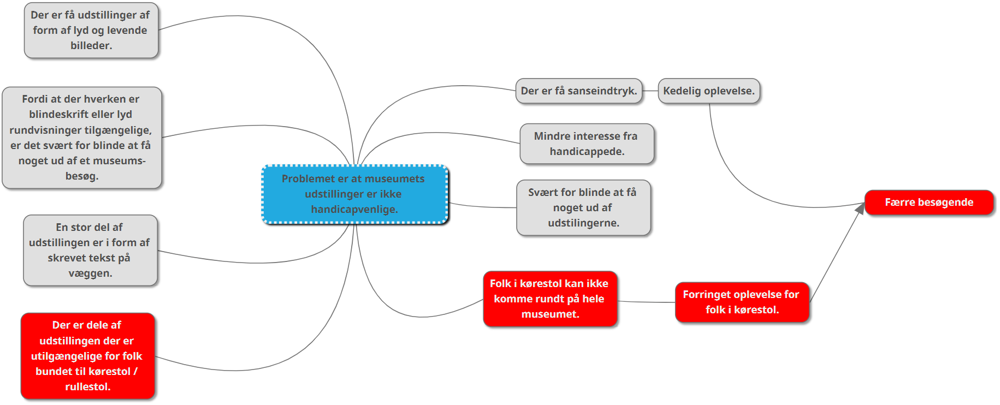
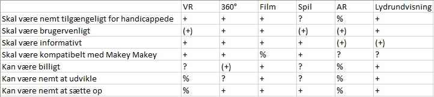

-
Spilprojekt del 1 - [Teknologi - B niveau] / [Kommunikation / IT - A niveau]
Intro
- Dette produkt er tænkt til at hjælpe handicappede, der ikke har mulighed for at se og opleve alle udstillingerne på Museum Østjylland.
Problemidentificering
- Problemet er at deres udstilling ikke er tilgængelig nok for handicappede.
Problemformulering
- Hvordan kan vi forbedre oplevelsen, for folk i køre-/rullestol.
Problemtræ
Problemanalyse
- En stor del af udstillingen er i form af skrevet tekst på væggen.
- Det gør oplevelsen værre for blinde, fordi teksten er skrevet på skilte.
- Som gør at blinde ikke har mulighed for at ”læse” hvad der står.
- Eftersom der ingen audio-rundvisning, så kan de ikke få det læst op, med mindre de har en medhjælper med.
- Der er få udstillinger af form af lyd og levende billeder.
- Der er mangel på lyd og levende billeder. Der er rigtig meget tekst på alle udstillingerne.Brainstorm
- Virtual Reality (VR)
- 360° VR Billede rundvisning
- Spil
- Film
- Augmented Reality
- Audio rundvisning
VR - Rundvisning
- Lave et virtuel rum af loftet. Som vil kunne ses i VR-briller, hvor man får uddelt en brugerkontroller, hvor der er 4 pile, frem, tilbage og side til side. Som man bruger til at bevæge sig rundt i det virtuelle rum. Man kan kigge rundt med VR-brillerne, man kan komme tættere på væggene, så man kan læse de forskellige ting om udstillingerne.
Video - Rundvisning
- Lave en video over hele loftet. Hvor man går rundt og kigger på alle teksterne og udstillingerne. Så man får en fornemmelse af hvordan loftet er, hvordan det ser ud.
Krav-matrix
+ = Opfylder kravene

(+) = Opfylder kravene halvt
% = Opfylder ikke kraveneEn præcis forklaring af vores produkt, samt hvilket problem vores produkt løser
- Vores produkt kommer til at være en 360° interaktiv simulation af et af de rum, hvor en person i enten rulle-/kørestol ikke har mulighed for at komme ind. Brugeren får udleveret et VR “headset”, der simulerer brugerens hovedbevægelser i det virtuelle miljø, samt en controller til at “bevæge sig” i det digitale miljø.
- Dette vil forbedre brugerens oplevelse på Museum Østjylland betydeligt, da det viser at der er taget hensyn til handicappede, samt gør udstillingerne mere tilgængelige.Hvilket problem behandler eller løser vores produkt?
- Vores produkt løser problemet for de handicappet der ikke kan komme rundt og se alle udstillingerne. Vores produkt giver følelsen af at være i rummet.
Vores målgruppe
- Alle aldre
- Folk der kan dansk og engelsk
- Handicappede der ikke kan gå, og derved ikke kan komme ind til de forskellige udstillingerBeskrivelse af brugssituationen
- En handicappet ankommer på museet og bliver ført rundt på de dele af museet de godt kan komme hen til, for derefter at blive vist ind i et rum hvor headsettet befinder sig, og bliver præsenteret for controlleren. De tager headsettet på og kan nu se de resterende udstillinger, som om at de var til stede i de manglende rum.
Beskrivelse af vores produkts genre, stil og inspirationskilder
- Vi har taget inspiration til produktet fra Google Street View, og da vi kommer til at bruge billeder fra museet, kan man vel sige at vi drager inspiration til design derfra.
Tekniske krav
- HTC Vive
- Et TVComputer Specs
Minimum PC specs:
- Processor: Intel Core i5-4590/AMD FX 8350 (eller bedre)
- Grafikkort: NVIDIA GTX 970/AMD Radeon R9 290 (eller bedre)
- RAM: 4GB (eller mere)
- Video Output: HDMI 1.4 eller DisplayPort 1.2
- USB: Et USB-A 2.0
- OS: Windows 7, 8 eller 10Recommended PC specs:
- Processor: Intel Core i7-7700K/AMD Radeon RX 480 (eller bedre)
- Grafikkort: NVIDIA GTX 1060/AMD Radeon RX 480 (eller bedre)
- RAM: 8GB (eller mere)
- Video Output: HDMI 1.4 eller Displayport 1.2
- USB: Et USB-A 2.0
- OS: Windows 7, 8 eller 10Produktions krav
- Programmering
- Billedtagning
- Virtuel Reality opsætning